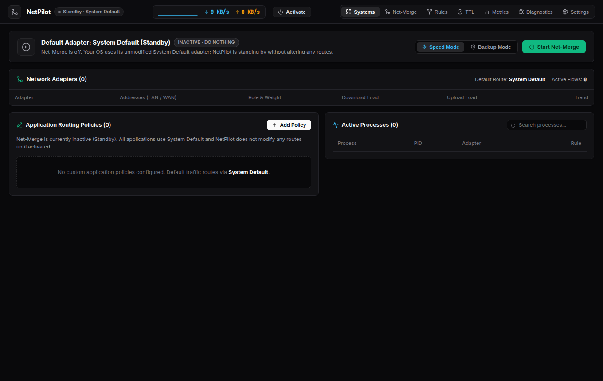

Organize your adapters
Collapse virtual and inactive networks, hide individual adapters, and keep the dashboard focused without changing routing.
Windows · macOS · Linux
See which links are active, track traffic as it moves, and choose between multi-link aggregation and a dedicated backup connection.

What you can do
Collapse virtual and inactive networks, hide individual adapters, and keep the dashboard focused without changing routing.
Use Speed mode to aggregate healthy links, or use NetPilot’s integrated engine for Backup Failover.
Identify live processes by their app icons and see the selected or running net-merge version at a glance.